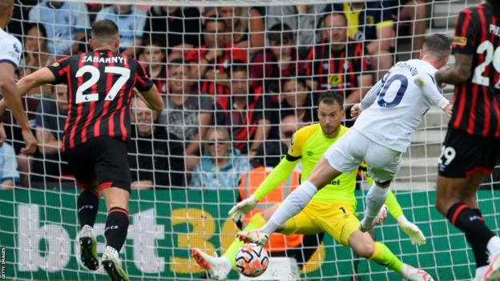
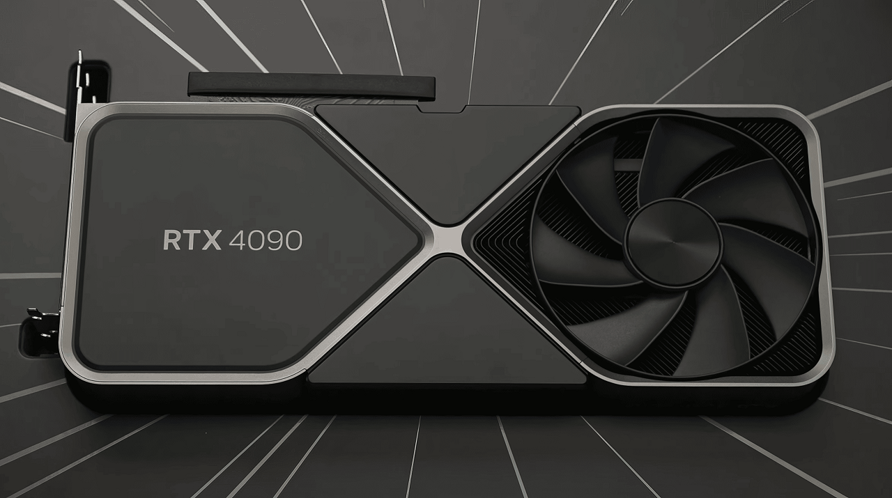

Soccer
At 26 August 2023, Tottenham has defeated Bournemouth for 2-0. James Maddison scores a goal at 17 minutes and Dejan Kuluvsevski scores the second for Tottenham Hotspur at 67 minutes, Tottenham new coach A. Postecoglou was a new coach for Tottenham and haven’t made any loses in premiere league for Tottenham. The fans was happy for the team performance and Tottenham was the first place in Premiere League for now.
Technology
At October 12 2022, Geforce RTX 4090 was released and was introduced by the public. This new Graphic driver could have defeated any other graphic card and be the fastest graphic card ever with Ray Tracing technologies with it. The Nvidia claimed that the 4090 will be the best graphic card quality ever too. The gamers or the pc lovers hunt this graphic card until they were ran out of stocks everywhere. Everyone is really hype about it because it’s a really fast graphic card that could go more than 500 fps on every most game.
Otomotive

At May 2022, BMW introduced the series of G20 and it’s called LCI or facelift. The G20 LCI consist of 320i and 330i. The new LCI has a sporty, futuristic new front and back bumpers with diffuser on it. The interior was pretty much the same except the new LCI series have two screen. This car could go 0-100 km/h within 5.7 seconds because it has 245 HorsePower, 2.0 liter four cyinder and 295 pound feet of torque. This car is really fast that could’ve beat the new civic type R and everyone is hype and order the car.